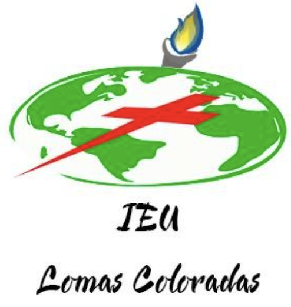
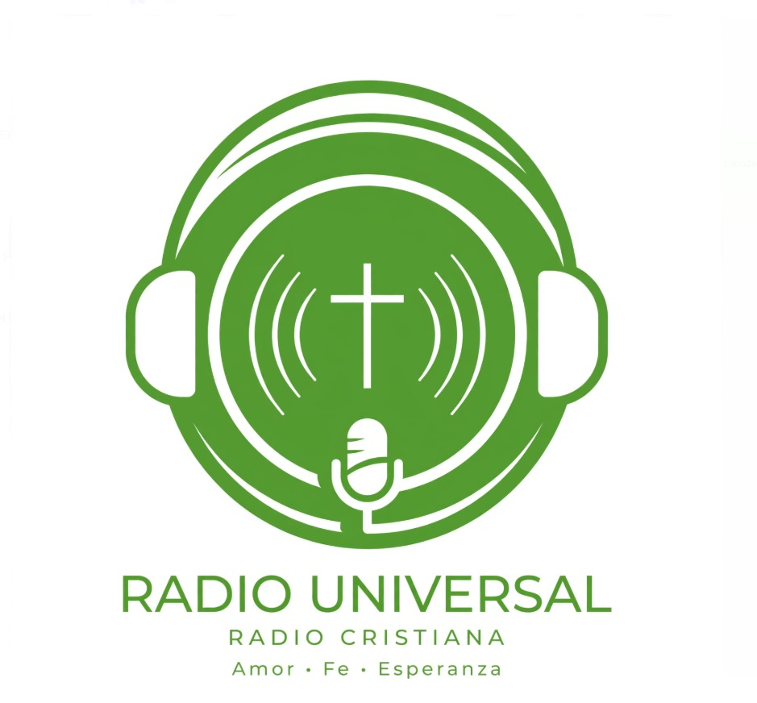
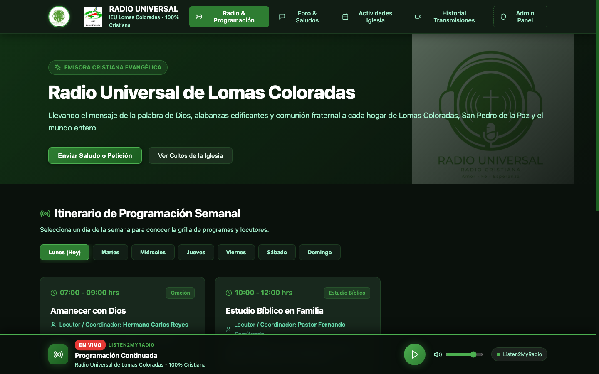
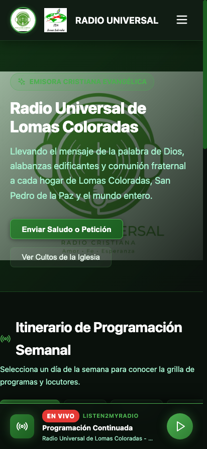
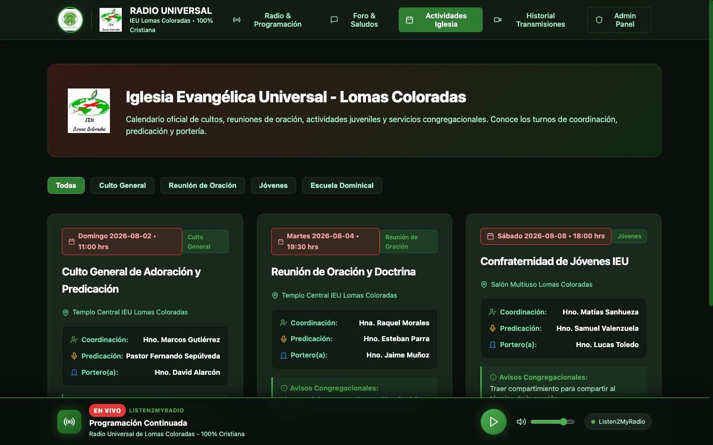
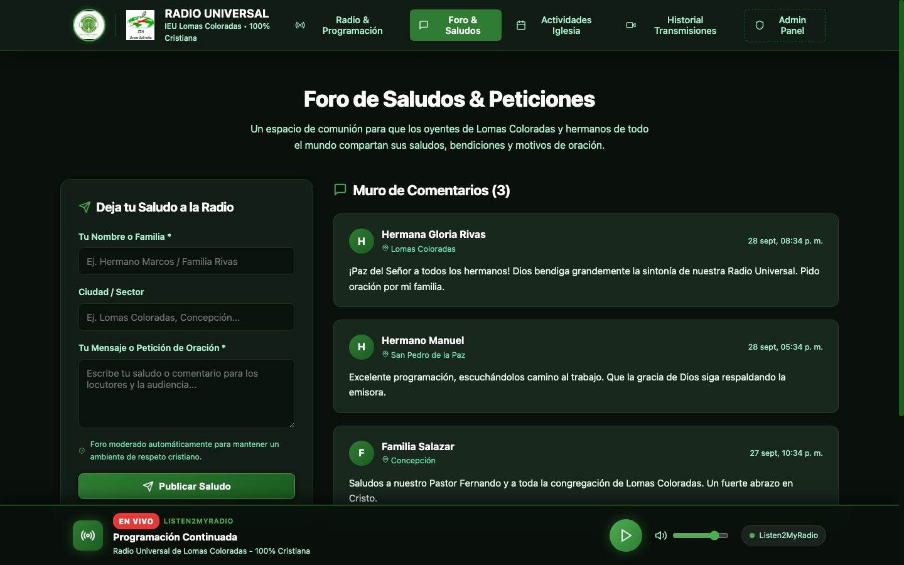
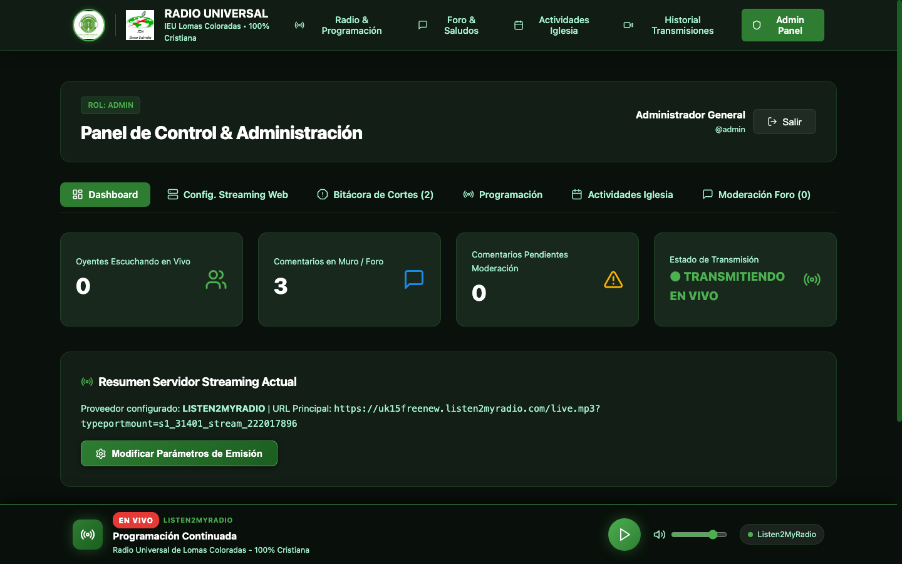
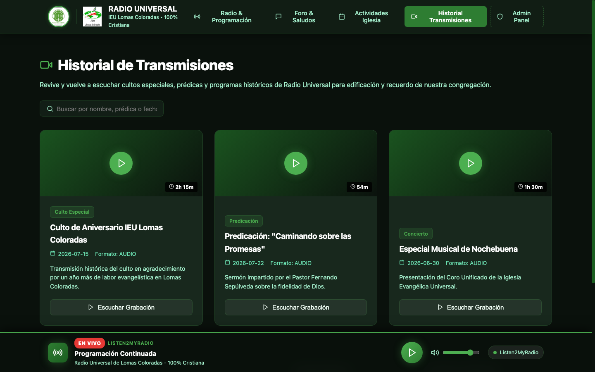

Conectando nuestra congregación, abriendo las puertas a la comunidad y activando los dones de cada hermano y hermana en el Reino de Dios.


Una herramienta creada exclusivamente para la salvación, acompañamiento y edificación espiritual.
No buscamos generar ingresos ni monetización. La misión es llevar el mensaje de Jesucristo 24/7 a cada hogar, dispositivo móvil y automóvil.
Llegar a hermanos enfermos, adultos mayores, trabajadores de turnos nocturnos y personas que por salud o lejanía no pueden desplazarse al templo.
Música de alabanza y adoración, lecturas bíblicas, prédicas dominicales y programas reflexivos ordenados por bloques y horarios transparentes.
Un puente directo hacia los vecinos de Lomas Coloradas, San Pedro de la Paz y alrededores.

Los vecinos y visitantes pueden conocer la dirección del templo, horarios de cultos generales, escuela dominical y reuniones de oración en un clic.
Para muchas personas, el primer contacto con el Evangelio no ocurre pisando el templo, sino escuchando una alabanza en la intimidad de su teléfono.
Cartelera abierta con turnos de coordinación, predicación y portería, promoviendo orden, responsabilidad y puntualidad en el servicio.
Integrando a hermanos y hermanas que hoy participan poco en la liturgia tradicional del altar.
El altar tiene tiempos y cupos limitados. La plataforma digital abre espacio para que decenas de hermanos sirvan activamente con sus capacidades.
Locución de devocionales, relatos de testimonios, lectura bíblica comentada, operación de audio, edición y administración de contenidos.
Hermanos dedicados a responder peticiones de oración y saludos comunitarios en el muro, acompañando pastoralmente a quienes sufren.

Solución integral probada en tiempo real: reproductor continuo, archivo y panel administrativo.


Audio optimizado para bajo consumo de datos móviles, reconexión instantánea ante cortes de red y control de volumen integrado.
Prédicas y cultos grabados disponibles bajo demanda para que ningún hermano se pierda el mensaje dominical o estudios bíblicos.
Métricas de audiencia en vivo, configuración de URLs del servidor streaming, bitácora de incidencias y moderación del foro.
Un desarrollo ordenado, paso a paso, consolidando primero los cimientos y ministerios.
Señal de audio en vivo 24/7, cartelera semanal de programas, calendario congregacional de cultos, historial de grabaciones y muro de oración.
Programas grabados y temáticos por ministerio: Juventud Cristiana, Sociedad Femenina (Dorcas), Escuela Dominical y micro-cápsulas devocionales de 5 min.
Transmisión de video multicámara en vivo de cultos de adoración, aniversarios de la iglesia, confraternidades de jóvenes y conferencias pastorales.
Una obra que pertenece a Dios y necesita de las manos y oraciones de toda la hermandad.
Poner esta herramienta bajo la bendición del Señor y del Espíritu Santo, para que sea un imán de salvación y consuelo para las almas necesitadas.
Convidar a hermanos y hermanas que tengan anhelo de servir en locución, lectura de la Palabra, testimonios, apoyo técnico o moderación de peticiones.
Compartir el enlace con vecinos, familiares, ancianos y amigos para que la presencia del Señor entre en sus hogares y teléfonos móviles.